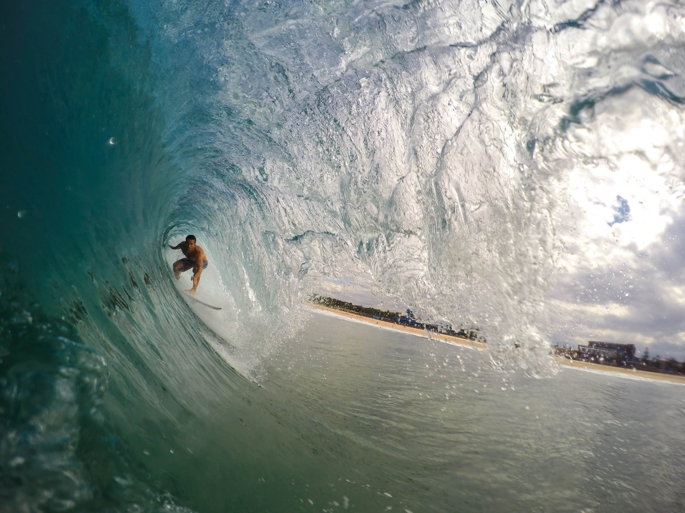

Surfistas nacionais
 Maria Vitória
Maria Vitória
 16, jun 2019
16, jun 2019
Gabriel Medina
Nascido no município de São Sebastião, o paulista começou no esporte aos nove anos de idade. Com onze, venceu o Rip Curl Grom Search na categoria sub-12. Após sucessos em diversos campeonatos, ingressou na elite mundial (Word Tour) quando tinha apenas 17 anos.
Em 2014, se tornou o primeiro brasileiro a vencer o Campeonato Mundial de Surf. No ano seguinte, foi incluído na lista das 100 pessoas mais influentes do universo de acordo com a revista Time. Em 2018, novamente fez história como primeiro brasileiro bicampeão mundial.
Adriano de Souza
Apesar do apelido de “Mineirinho”, Adriano nasceu no Guarujá, em 1987. Com somente 15 anos, ganhou notoriedade ao virar o mais jovem campeão de uma competição profissional, quando venceu o SuperSurf, do Circuito Brasileiro.
Em 2011, transformou-se no primeiro surfista brasileiro a liderar o ranking mundial do esporte. No mesmo ano, derrotou a lenda Kelly Slater (11 vezes campeão mundial) na etapa de Peniche do Circuito Mundial.
Contudo, foi apenas em 2015 que o Mineirinho entrou de vez para a história do esporte. Afinal, nunca um brasileiro havia vencido Pipeline, última e mais aclamada etapa do Circuito Mundial, responsável por fechar a famosa Tríplice Coroa Havaiana. Com essa conquista, faturou também o título do Campeonato Mundial de Surf.
Filipe Toledo
O paulista de 23 anos, é mais conhecido como ”Filipinho”. Um de seus principais feitos foi ter derrotado John John Florence no Pro Junior do US Open de 2011, quando tinha apenas 16 anos. Filipinho ficou em terceiro lugar no Campeonato Mundial de Surf em 2018.
Ítalo Ferreira
Dentre os maiores feitos, vale destacar o título do Quiksilver Pro Junior, realizado no Brasil. Pelo Circuito Mundial, foi campeão da etapa Rip Curl Bells Beach 2018, desbancando o tricampeão Mick Fanning na final. Ítalo iniciou 2019 com chave de ouro vencendo a final do Quiksilver Pro Gold Coast que foi disputada contra o norte- americano Kolohe Andino.
Jacqueline Silva
Foi a primeira brasileira a quase conquistar o WCT. Um expoente do surfe de Florianópolis, Jacque foi vice-campeã mundial em 2002. Uma atleta que mostrou que era possível brigar de igual para igual com as australianas e havaianas, Jacque venceu etapas do circuito de elite e também foi bicampeã do WQS, a divisão de acesso (2001-2007).
Silvana Lima
Assim como Jacqueline Silva, Silvana também bateu na trave para conquistar o título mundial. Em 2008 e 2009, a cearense foi vice-campeã. Hoje, Sil ainda compete no WCT e é a atleta brasileira que ficou por mais tempo no circuito, contabilizando dez temporadas no até hoje.
Ela marcou a história do surfe feminino por seu estilo agressivo e determinado e já passou por algumas lesões sérias e dificuldade pela falta de patrocínio, mas nunca desistiu do sonho de competir na elite. A cearense foi oito vezes campeã brasileira e também é a maior campeã de etapas do WCT, com quatro troféus.
Maya Gabeira
Maya Gabeira é a surfista que levou o Brasil a ser conhecido internacionalmente no cenário do surfe de ondas grandes. A big rider é a maior colecionadora de títulos do XXL Big Wave Awards, tendo cinco deles na melhor performance feminina.
Maya já surfou ondas gigantes nos picos mais importantes e temidos do mundo. Em Nazaré, a carioca viveu o seu pior pesadelo quando chegou a perder a consciência depois de um caldo sinistro em 2013. Recuperada, voltou a encarar Nazaré e hoje mora próxima dali.
Nicole Pacelli
É a brasileira que trouxe o primeiro Mundial para o país em uma modalidade de surfe. Sobre um stand up paddle, a surfista de Maresias conquistou o mundo pela primeira vez em 2013 e depois repetiu o feito em 2014. Nicole hoje também se dedica às ondas grandes, foi a primeira surfista brasileira, entre homens e mulheres, a surfar Jaws, no Havaí, de SUP.
Comentários
Isabella
3 meses atrásEsses atletas são top!